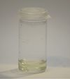

limonene

Definition: Limonene is a colorless liquid aliphatic hydrocarbon classified as a cyclic monoterpene, and is the major component in the oil of citrus fruit peels. The D-isomer, occurring more commonly in nature as the fragrance of oranges, is a flavoring agent in food manufacturing. It is also used in chemical synthesis as a precursor to carvone and as a renewables-based solvent in cleaning products. The less common L-isomer has a piny, turpentine-like odor, and is found in the edible parts of such plants as caraway, dill, and bergamot orange plants.Limonene takes its name from Italian limone ("lemon"). Limonene is a chiral molecule, and biological sources produce one enantiomer: the principal industrial source, citrus fruit, contains D-limonene ((+)-limonene), which is the (R)-enantiomer. Racemic limonene is known as dipentene. D-Limonene is obtained commercially from citrus fruits through two primary methods: centrifugal separation or steam distillation.
Source: Wikipedia
Wikipedia Page (Something wrong with this association? Let us know.)
Wikidata Page (Something wrong with this association? Let us know.)